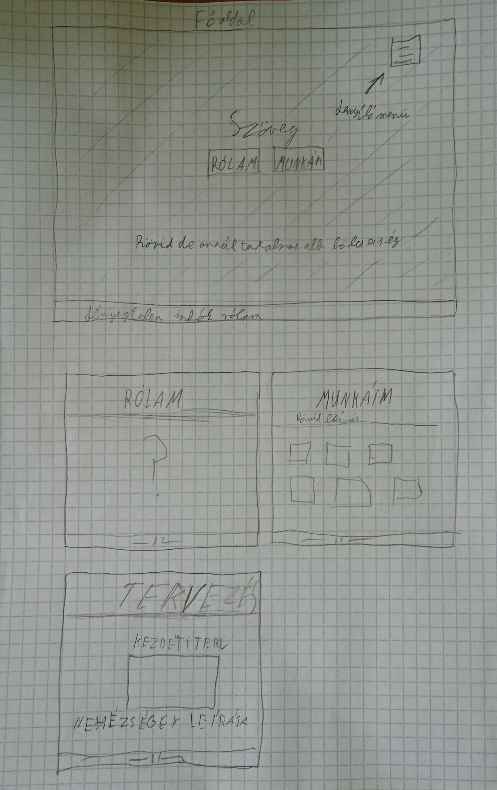
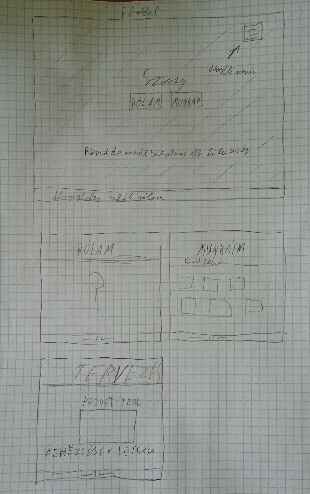

Kezdeti tervek és megvalósítás

Úgy gondoltam kezdetben, hogy ez a projekt tapasztalat nélkül is könnyen és gyorsan teljesíthető lesz. De én szerettem volna minél gyorsabban és könnyebben megcsinálni. Így a kiadott segédanyagok helyett máshol kutakodtam a megfelelő segítség után. Hiba volt. 2-3 órával és egy borzalmas honlappal később elölről kezdtem az egészet immár a kiadott segédanyagokkal. és a videókkal haladva néha picit hozzá tette néha picit elvettem a kódból és az anyagok végére érve nem volt más dolgom, mint a szövegeket és képeket beilleszteni a megfelelő helyre. Persze menetközben többször is meg kellett állnom és egy 2-3 perces youtube videóval foltozgatnom hiányos tudásom, de semmi eget rengető ezután. Tapasztalatként csak annyit foglalnék össze, hogy ezek után nem fogok „megijedni” kisebb programozási feladatoktól vagy akár egy weblap szerkesztéstől mert nincs olyan probléma amit 5 perc keresgélés ne oldana meg ha az alap logikát megérti az ember. Persze az idő sporolós miatt több ötletemtől is búcsút vettem mint pl a lenyíló menü.

Úgy gondoltam kezdetben, hogy ez a projekt tapasztalat nélkül is könnyen és gyorsan teljesíthető lesz. De én szerettem volna minél gyorsabban és könnyebben megcsinálni. Így a kiadott segédanyagok helyett máshol kutakodtam a megfelelő segítség után. Hiba volt. 2-3 órával és egy borzalmas honlappal később elölről kezdtem az egészet immár a kiadott segédanyagokkal. és a videókkal haladva néha picit hozzá tette néha picit elvettem a kódból és az anyagok végére érve nem volt más dolgom, mint a szövegeket és képeket beilleszteni a megfelelő helyre. Persze menetközben többször is meg kellett állnom és egy 2-3 perces youtube videóval foltozgatnom hiányos tudásom, de semmi eget rengető ezután. Tapasztalatként csak annyit foglalnék össze, hogy ezek után nem fogok „megijedni” kisebb programozási feladatoktól vagy akár egy weblap szerkesztéstől mert nincs olyan probléma amit 5 perc keresgélés ne oldana meg ha az alap logikát megérti az ember. Persze az idő sporolós miatt több ötletemtől is búcsút vettem mint pl a lenyíló menü.